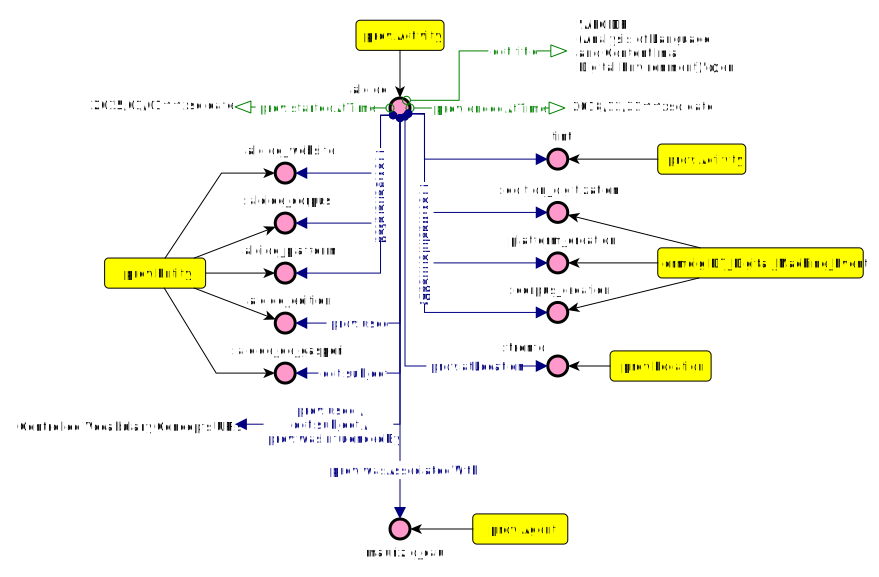

The KNOT Data Model - Modules
KNOT-DM can be treated as a set of interlinked modules that describe different aspects of academic research projects as digital cultural heritage. Each module works across one or more of the three segments that make up the data model and can be used to describe: the activity of the research project; the entities a research project used and generated (its outputs and inputs); the agents and locations involved; the relationships between activities, entities, agents, and locations; how to access research outputs; and concepts related to the classification of activities and outputs. All of this information should in turn help answer questions about who, what, where, when, and how as they relate to the central theme of the KNOT project.
It is recommended to first read the Data Model Structure section, which gives an overview of the three segments that make up KNOT-DM, though some information is also repeated in this section.
The following legend applies to all graphical representations and textual higlights based on the "Graphical Framework for OWL Ontologies" [1]: a yellow box indicates a class, a blue arrow indicates an object property, a green arrow indicates a data property, a black arrow indicates a predicate between two entities, and a pink dot indicates an instance of a class (also referred to as an individual).
The modules makes use of the ALCIDE analysis platform as an example project. ALCIDE was a three-year project conducted by two research labs at the Bruno Kessler Foundation with the goal to create an online platform for analysis of political discourse, using the writings of Italian politician Alcide de Gasperi as an example.
The Research Project as Activity
Within KNOT-DM academic research projects are conceptualized as a form of activity that uses and generates entities.
The description of academic activity in KNOT-DM happens across two of its three segments: Academic Provenance, using the Activity class from PROV-O which represents the overall research activity, and Cultural Heritage Information, using the D7 Digital Machine Event class from CRMdig which represents more specific sub-activities or tasks within the overall activity. These two classes and segments are connected via prov:wasInformedBy.
KNOT-DM does not attempt to record all possible information about the research project as activity but rather a basic level that is almost always publicly available in a project’s documentation such as where and when the project took place, who was involved, and what ‘things’ were used and or generated.
It’s recommended to begin by describing the individual representing the overall activity itself before describing the individual(s) that represent more specific tasks.
The Overall Activity
prov:Activity represents the overall research project, within the context of academic provenance.
The following basic information about it should be recorded: its title (dct:title), the dates at which it began and ended (prov:startedAtTime, prov:endedAtTime, formatted as xsd:date), the location(s) it took place at (prov:atLocation), the agent(s) involved (prov:wasAssociatedWith), its primary topic or subject (dct:subject), the entities it used or generated (prov:used, prov:generated), and any specific activities or tasks that informed it (prov:wasInformedBy).
- For the title, it’s recommended to use the one that is most evident in the project’s public documentation with the understanding that it may differ from how the project is referred to elsewhere. The goal is to be accurate and consistent.
- For the start and end dates, these can sometimes be difficult to ascertain. If no full dates are available, at least a year should be recorded (with a value of 01 if either or both month and date are unknown).
Example
From the public documentation about ALCIDE we can infer the following necessary information about the activity: its subject is the Italian politician Alcide de Gasperi; it took place primarily in Trento, Italy; it involved five researchers and one web designer; it created three entities — a public website, a corpus, and an analysis platform — and made use of another one — a four-volume edition of the speeches and writings of de Gasperi. As for the sub-activities, the documentation shows that a digital version of the edition was the source for the creation of the corpus, which was in turn integrated into the analysis platform. We can therefore choose to represent each of these steps — digitization, creation of corpus, creation of platform — as a sub-activity*.
How to detail the individuals representing location, agents, and entities is explained in their respective modules while sub-activities is explained in the next step.
Figure 1 shows a diagram representing this first step, with some simplifications to keep it legible (only one agent is shown), followed by its RDF equivalent in Turtle format (featuring all agents).
{kind=link}
@prefix : <http://purl.org/knot/ontology/data/> .
@prefix xsd: <http://www.w3.org/2001/XMLSchema#> .
@prefix prov: <http://www.w3.org/ns/prov#> .
@prefix crmdig: <https://projects.ics.forth.gr/isl/CRMext/CRMdig_v3.2.2.rdfs#> .
@prefix dct: <http://purl.org/dc/terms/> .
:alcide a prov:Activity ;
dct:title "ALCIDE (Analysis of Language and Content In a Digital Environment)"@en ;
dct:subject :alcide_de_gasperi ;
prov:startedAtTime "2015/01/01"^^xsd:date ;
prov:endedAtTime "2018/12/31"^^xsd:date ;
prov:atLocation :trento ;
prov:wasAssociatedWith :maurizio_cau, :matteo_largaiolli, :sara_tonelli, :giovanni_moretti, :rachele_sprugnoli, :matteo_moretti ;
prov:generated :alcide_corpus, :alcide_website, :alcide_platform ;
prov:used :alcide_edition ;
prov:wasInformedBy :edition_digitization, :corpus_creation, :platform_creation.
:trento a prov:Location .
:maurizio_cau a prov:Agent .
:matteo_largaiolli a prov:Agent .
:sara_tonelli a prov:Agent .
:giovanni_moretti a prov:Agent .
:rachele_sprugnoli a prov:Agent .
:matteo_moretti a prov:Agent .
:alcide_corpus a prov:Entity .
:alcide_website a prov:Entity .
:alcide_platform a prov:Entity .
:alcide_edition a prov:Entity .
:alcide_de_gasperi a prov:Entity .
:edition_digitization a crmdig:D7_Digital_Machine_Event .
:corpus_creation a crmdig:D7_Digital_Machine_Event .
:platform_creation a crmdig:D7_Digital_Machine_Event .
Sub-Activities or Tasks
KNOT-DM uses CIDOC CRM and its extensions CRMdig and LMRoo (FKA FRBRoo) in order to detail what happened during the research project. The goal is to relate this information to the wider domain of cultural heritage and create a connection between research project activity and the central theme of the KNOT project.
crmdig:D7_Digital_Machine_Event represents sub-activities, or tasks, within a larger prov:Activity. These activities are implied to have been conducted by a human agent, in a specific place, on a device such as a computer, and to have used a digital object and/or software to create a new digital object. These two classes are connected via prov:wasInformedBy, which has been extended within KNOT-DM to include D7 in its range. This connection provides “dependency information” by suggesting “that the informed Activity used an Entity that was generated by the informing Activity” and can be used to create a “chain of provenance” based on activities [2]. This chain is used to describe sub-activities (or tasks) such as for example the digitalisation of a physical object or the creation of a digital object from other digital objects.
There are two important things to note at this point:
- The PROV-O documentation states that the dependency information created by
prov:wasInformedBydoes not require further details about either the activities or the entities involved. KNOT-DM suggests that if information about these is available, then they should be described according to the requirements. - The Cultural Heritage Information Segment of KNOT-DM has been designed to provide a basic level of information about what happens during a research project and to describe the digital objects it created in a cultural heritage context. The goal is not to describe the specificities of the research project in absolute detail but rather provide an overview of key events and objects that relate directly to cultural heritage and make it possible to further describe these using CIDOC if needed. In cases where information about the activity and outputs may be lacking, then the PROV-O recommendation stated above can be followed and instances of the sub-activities and their outputs can be created with no or minimal details (we recommend giving individuals at least a label).
The following basic information about instances of D7 should be recorded: a title (rdfs:label), which digital objects they used and/or created (crmdig:L10_had_input, crmdig:L11_had_output, crmdig:L23_used_software), where they took place (crm:P7_took_place_at), who they were carried out by (P14_carried_out_by), and their type (P2_has_type).
Depending on the level of information available about a research project, two D7 subclasses can also be used. In the case of digitalisation,crmdig:D2_Digitization_Process can also record the physical object used and the digital object created (crmdig:L1_digitized, crmdig:L20_has_created). crmdig:D10_Software_Execution can be used to describe activities where a computer used software or other operations on a digital object, recording both the source digital object (crmdig:L2_used_as_source) and the software it used, such as for example creating data visualizations or a dataset.
- The title of sub-activities should be given within the context of the record being created and what is being described, using natural language (e.g. "book digitization"). It is recommended to keep it succinct.
- The type of sub-activity should use a concept from an appropriate controlled vocabulary, such as for example Tadirah, which offers an extensive set of concepts related to digital research activities in the humanities.
- In the case of the location and agents involved in D7 activities, these may often be the same as those involved in the
prov:Activity. If so, the individuals representing them should each be given the appropriate class from PROV-O and CIDOC, as explained in the Conceptually Similar Classes section of the KNOT-DM overview.
Example
In the previous step we stated that ALCIDE involved three sub-activities, as instances of D7. We can now further detail these: the digitization of the editions is an instance of D2 conducted by the publisher, il Mulino; the creation of the corpus is an instance of D10 and the creation of the platform incorporating the corpus is an instance of D7, both conducted by the researchers. Therefore we can say that D2 took place in Bologna (home of the publisher) while D10 and D7 took place in Trento. We can add classes from CIDOC to existing instances of locations and agents already created in the previous step and create the new ones (il Mulino, Bologna). Lastly we can represent the sub-activity types using concepts from Tadirah, such as for example “Annotating” for the corpus creation.
How to detail the entities used and created by these sub-activities is covered in the Outputs & Inputs module.
Figure 2 shows a diagram representing this step, with all previously described agents grouped under a single individual to keep the diagram clear, followed by its RDF equivalent (incorporating elements from the previous step).
@prefix : <http://purl.org/knot/ontology/data/> .
@prefix xsd: <http://www.w3.org/2001/XMLSchema#> .
@prefix prov: <http://www.w3.org/ns/prov#> .
@prefix crmdig: <https://projects.ics.forth.gr/isl/CRMext/CRMdig_v3.2.2.rdfs#> .
@prefix dct: <http://purl.org/dc/terms/> .
@prefix crm: <http://cidoc-crm.org/cidoc-crm/7.1.2/> .
@prefix tadirah: <https://vocabs.dariah.eu/tadirah/> .
@prefix frbroo: <http://iflastandards.info/ns/fr/frbr/frbroo/> .
#the overall activity
:alcide a prov:Activity ;
dct:title "ALCIDE (Analysis of Language and Content In a Digital Environment)"@en ;
dct:subject :alcide_de_gasperi ;
prov:startedAtTime "2015/01/01"^^xsd:date ;
prov:endedAtTime "2018/12/31"^^xsd:date ;
prov:atLocation :trento ;
prov:wasAssociatedWith :maurizio_cau, :matteo_largaiolli, :sara_tonelli, :giovanni_moretti, :rachele_sprugnoli, :matteo_moretti ;
prov:generated :alcide_corpus, :alcide_website, :alcide_platform ;
prov:wasInformedBy :edition_digitization, :corpus_creation, :platform_creation.
#the sub-activities or tasks
:edition_digitization a crmdig:D2_Digitization_Process ;
rdfs:label "Digitization of de Gasperi edition"@en ;
crm:P7_took_place_at :Bologna ;
crm:P14_carried_out_by :il_mulino ;
crmdig:L1_digitized :edition_item ;
crmdig:L20_has_created :edition_digitized ;
crm:P2_has_type tadirah:capturing .
:corpus_creation a crmdig:D10_Software_Execution ;
rdfs:label "Creation of de Gasperi corpus"@en ;
crm:P7_took_place_at :trento ;
crm:P14_carried_out_by :maurizio_cau, :matteo_largaiolli, :sara_tonelli, :giovanni_moretti, :rachele_sprugnoli ;
crmdig:L2_used_as_source :edition_digitized ;
crmdig:L11_had_output :alcide_corpus ;
crm:P2_has_type tadirah:annotating .
:platform_creation a crmdig:D7_Digital_Machine_Event ;
rdfs:label "Creation of ALCIDE platform"@en ;
crm:P7_took_place_at :trento ;
crm:P14_carried_out_by :maurizio_cau, :matteo_largaiolli, :sara_tonelli, :giovanni_moretti, :rachele_sprugnoli, :matteo_moretti ;
crmdig:L10_had_input :alcide_corpus ;
crmdig:L11_had_output :alcide_platform ;
crm:P2_has_type tadirah:creating .
:trento a prov:Location, crm:E53_Place .
:bologna a crm:E53_Place .
:il_mulino a crm:E39_Actor .
:maurizio_cau a prov:Agent, crm:E39_Actor .
:matteo_largaiolli a prov:Agent, crm:E39_Actor .
:sara_tonelli a prov:Agent, crm:E39_Actor .
:giovanni_moretti a prov:Agent, crm:E39_Actor .
:rachele_sprugnoli a prov:Agent, crm:E39_Actor .
:matteo_moretti a prov:Agent, crm:E39_Actor .
:alcide_corpus a prov:Entity, crmdig:D1_Digital_Object .
:alcide_website a prov:Entity .
:alcide_platform a prov:Entity, crmdig:D1_Digital_Object .
:alcide_de_gasperi a prov:Entity .
:edition_item a frbroo:F5_Item .
:edition_digitized a crmdig:D9_Data_Object .
Research Outputs and Inputs as Entities
Within KNOT-DM the outputs of a research project (the digital objects it created) and the inputs (the things it may have used to do this such as physical or digital objects, historical figures, time periods) are conceptualized across all three of its segments as entities. As the KNOT project is focused on digital cultural heritage, the scope of the model is to record information about outputs as digital objects only.
These entities are described using relevant classes from each segment. As detailed in the Conceptually Similar Classes section of the overview, this means that an individual representing a research output can belong to multiple classes each describing a different aspect of its aboutness as an entity: prov:Entity for the entity’s provenance dimension; crmdig:D1_Digital_Object (and subclasses) for the entity’s cultural heritage dimension; and dcat:Dataset (and subclasses) or dcat:DataService for the entity’s public data dimension.
Entities are connected to the overall activity that generated them via prov:wasGeneratedBy, crmdig:L20_has_created and crmdig:L11_had_output (see the Activity module for more).
The level of information that should be recorded about each entity varies depending on which segment is used to describe it, though there is an expected shared minimum such as its title/label, what activity generated and/or used it, its relationship to other entities, a URI for an accessible representation, and its type and/or conceptual features.
The order in which outputs are described is up to the user. Some may find it easier to begin with public data, as it allows the most amount of detail about an entity, some of which may be reused elsewhere, while others may find it easier to follow the same approach as the Activity module and begin with provenance followed by cultural heritage and finally public data (this is the approach this module takes).
Provenance Entities
prov:Entity represents entities within the Academic Provenance Segment, referring to their provenance within the overall activity. The following information about it should be recorded: a title (dct:title or rdfs:label), a value (prov:value), and its relationship to the activity or to another entity (prov:generated, prov:used,prov:wasInfluencedBy, prov:wasDerivedFrom, dct:subject).
- For the title,
rdfs:labelshould only be used when there is no official title available and it should describe the entity succinctly in natural language and in the context of the record being created. prov:valueshould always point to a URI that is an accessible representation of the entity. In this sense it acts in a similar way asowl:sameAs.
Details of how to use the relationship properties between entities are given in the Relationship module.
Example
In the Activity module we created five instances of prov:Entity that were either generated or used by the ALCIDE project: three representing the outputs of the project (the website, the corpus*, and the analysis platform); one representing the four-volume edition used to create the corpus; and one representing Alcide de Gasperi as the primary subject of the project. Each of these is given a title (or label in the case of the website and platform) and corresponding URI.
Figure 1 shows a diagram representing this step, alongside its RDF equivalent, incorporating the relevant aspects of the prov:Activity individual created in the Activity module.
@prefix : <http://purl.org/knot/ontology/data/> .
@prefix xsd: <http://www.w3.org/2001/XMLSchema#> .
@prefix prov: <http://www.w3.org/ns/prov#> .
@prefix dct: <http://purl.org/dc/terms/> .
@prefix rdfs: <http://www.w3.org/2000/01/rdf-schema#> .
#the overall activity
:alcide a prov:Activity ;
dct:title "ALCIDE (Analysis of Language and Content In a Digital Environment)"@en ;
dct:subject :alcide_de_gasperi ;
prov:generated :alcide_corpus, :alcide_website, :alcide_platform ;
prov:used :alcide_edition .
#the entities used and/or generated
:alcide_corpus a prov:Entity ;
dct:title "De Gasperi's Corpus"@en ;
prov:value <https://github.com/StefanoMenini/De-Gasperi-s-Corpus> .
:alcide_website a prov:Entity ;
rdfs:label "ALCIDE website"@en ;
prov:value <https://alcidedigitale.fbk.eu/> .
:alcide_platform a prov:Entity ;
rdfs:label "ALCIDE platform"@en ;
prov:value <https://alcidedigitale.fbk.eu/platform> .
:alcide_edition a prov:Entity ;
dct:title "A. De Gasperi, Scritti e discorsi politici, I-IV"@it ;
prov:value <https://www.mulino.it/collana/scritti-discorsi-de-gasperi> .
:alcide_de_gasperi a prov:Entity ;
dct:title "Alcide de Gasperi"@it ;
prov:value <https://viaf.org/viaf/32011324> .
Cultural Heritage Digital Objects
crmdig:D1_Digital_Object and its subclasses represent entities within the Cultural Heritage Information Segment, referring to their cultural heritage qualities and connected to the specific sub-activities that generated or used them. The crmdig:D9_Data_Object subclass refers specifically to digital objects created by a D2 activity while the crmdig:D14_Software subclass refers to software used or created by a D7 activity.
The following information should be recorded about instances of D1 and its subclasses: a title (dct:title or rdfs:label), unless the object is already an instance of a class from another segment with an existing title or label, their relationship to activities and other entities (crm:P106_is_composed_of, crmdig:L10_had_input, crmdig:L11_had_output, crmdig:L1_digitized, crmdig:L2_used_as_source), and their type (crm:P2_has_type).
Furthermore, because a digitization process also involves a physical object KNOT-DM includes crm:E18_Physical_Object to describe these if the information is available. Physical objects can be further detailed using classes from the LRMoo extension: frbroo:F5_Item (a subclass of E18) and frbroo:F3_Manifestation, following the WEMI model of FRBR [3]. Lastly, this segment also includes crm:E1_Entity (which comprises all things in the universe of discourse of CIDOC CRM) which can be connected to D2, E18, or F3 to describe what they are about. The following information should be recorded about these classes: a title (dct:title or rdfs:label), a URI that is an accessible representation of the entity (owl:sameAs), and their relationships to other entities (crm:P129_is_about). Optionally, you can also record the type of the physical object using P2.
Example
In the Activity module we described three instances of D7 that informed the overall ALCIDE project. We can now describe the objects they involved: the digitization of the edition created an instance of D9 by digitizing an instance of F5*; while the creation of the corpus and platform each created an instance of D1, with the corpus using the digitized edition as a source and the analysis platform using the corpus as input. We can now also state that the corpus is composed of the digitized edition and that the platform is composed of the corpus. Lastly we can also detail the manifestation of the item, which represents the overall content and form of presentation of the editions, which can in turn be connected to the existing instance representing Alcide de Gasperi, which is who the manifestation is about. The instances of D1 can be connected to concepts from the KNOT-DM vocabularies to describe their type.
Figure 2 shows a diagram representing this step, followed by its RDF equivalent, incorporating the relevant aspects of the individuals created in the Activity module and the entities from the previous step.

@prefix : <http://purl.org/knot/ontology/data/> .
@prefix prov: <http://www.w3.org/ns/prov#> .
@prefix crmdig: <https://projects.ics.forth.gr/isl/CRMext/CRMdig_v3.2.2.rdfs#> .
@prefix dct: <http://purl.org/dc/terms/> .
@prefix crm: <http://cidoc-crm.org/cidoc-crm/7.1.2/> .
@prefix frbroo: <http://iflastandards.info/ns/fr/frbr/frbroo/> .
@prefix rdfs: <http://www.w3.org/2000/01/rdf-schema#> .
#CRMdig activities
:edition_digitization a crmdig:D2_Digitization_Process ;
rdfs:label "Digitization of de Gasperi edition"@en ;
crmdig:L1_digitized :edition_item ;
crmdig:L20_has_created :edition_digitized .
:corpus_creation a crmdig:D10_Software_Execution ;
rdfs:label "Creation of de Gasperi corpus"@en ;
crmdig:L2_used_as_source :edition_digitized ;
crmdig:L11_had_output :alcide_corpus .
:platform_creation a crmdig:D7_Digital_Machine_Event ;
rdfs:label "Creation of ALCIDE platform"@en ;
crmdig:L10_had_input :alcide_corpus ;
crmdig:L11_had_output :alcide_platform .
#Digital Objects created by the activities
:alcide_corpus a prov:Entity, crmdig:D1_Digital_Object ;
dct:title "De Gasperi's Corpus"@en ;
prov:value <https://github.com/StefanoMenini/De-Gasperi-s-Corpus> ;
crm:P106_is_composed_of :edition_digitized ;
crm:P2_has_type <http://purl.org/knot/taxonomy#corpus> .
:alcide_platform a prov:Entity, crmdig:D1_Digital_Object ;
rdfs:label "ALCIDE platform"@en ;
prov:value <https://alcidedigitale.fbk.eu/platform> ;
crm:P2_has_type <http://purl.org/knot/taxonomy#digital_platform> ;
crm:P106_is_composed_of :alcide_corpus .
:edition_digitized a crmdig:D9_Data_Object ;
rdfs:label "Digitized form of the edition"@en .
:edition_item a frbroo:F5_Item ;
dct:title "A. De Gasperi, Scritti e discorsi politici, I-IV"@it .
:edition_manifestation a frbroo:F3_Manifestation .
:alcide_de_gasperi a prov:Entity, crm:E1_Entity ;
dct:title "Alcide de Gasperi"@it ;
prov:value <https://viaf.org/viaf/32011324> .
Public Data
dcat:Dataset (and its subclass dcat:Catalog) represents entities within the Public Data Segment, referring to their public data qualities and connecting them to the overall prov:Activity that generated them. In some situations, an instance of dcat:DataService can also represent a research output (interactive access to data created by the project) though as this class' primary function relates to access its usage is detailed in the Access module.
KNOT-DM makes use of the majority of the DCAT model to record information about entities, such as their technical and conceptual characteristics, their relationship to the research project that created them, the spatio/temporal information they contain or refer to, and how they can be accessed and/or reused. This information follows varying levels of requirement (mandatory, recommended, optional) based on the DCAT AP guidelines with some KNOT-specific updates.
The Data Container
dcat:Catalog represents a container for all research outputs and documentation. It must be a digital object that contains metadata information about the project and its outputs and/or hosts the data and services it describes. It is a subclass of dcat:Dataset, thus implying that this container is itself a dataset produced by the research activity. Based on these requirements, its most likely real world representation will be the research project’s official website*.
The following information must be recorded about it: a description (dct:description), its title (dct:title), its publisher(s) (dct:publisher), the dataset(s) it includes (dcat:dataset), the knowledge organization systems used to classify its dataset(s) (dcat:themeTaxonomy), and the concepts used to classify the catalogue itself (dcat:theme).
Recommended information that should be recorded, if available, includes: the data service(s) it includes, its homepage, the language used in the metadata of the dataset(s), the license under which the catalogue can be (re)used, its release date and/or last modified date (formatted as xsd:date), its creator(s), and the geographical area it covers.
Optional information that can be recorded, if available, includes: keywords, whether or not the catalogue includes another, whether or not it includes a metadata record about itself, and a rights statement.
Most, if not all, of this information should be available from the existing public documentation of the research project. When something is not clear, efforts should be taken to infer and use the most consistent and logical information available.
- In the case of publishers and creators, for the catalogue priority is given to organizations.
- For the geographical area, as research projects may often cover multiple areas the value that represents the primary location or a location that offers the most coverage should be used.
For details on how to record information about the knowledge organization systems and concepts refer to the Relationships module, Controlled Vocabulary section, or Ontology usage notes.
Example
The ALCIDE public website, which we first described in the Activity module, is the catalogue for the project as it includes information about the research and hosts an accessible form of the dataset and the data service, represented by the corpus and analysis platform individuals we’ve already described. Two new individuals are created to represent the research laboratories that the researchers are a part of and which acted as creators and publisher. An individual representing Italy is also created to represent the geographical area covered by the catalogue (while de Gasperi’s speeches and writings cover other areas, Italy is chosen as it is the most represented). Concepts from controlled vocabularies are used for the language and theme while the description is taken from the website.
Figure 3 shows a diagram representing this step, with some of the information simplified to keep the diagram legible, followed by its RDF equivalent incorporating the relevant aspects of the individuals already created in previous steps and modules.

@prefix : <http://purl.org/knot/ontology/data/> .
@prefix xsd: <http://www.w3.org/2001/XMLSchema#> .
@prefix prov: <http://www.w3.org/ns/prov#> .
@prefix dct: <http://purl.org/dc/terms/> .
@prefix dcat: <http://www.w3.org/ns/dcat#> .
@prefix crmdig: <https://projects.ics.forth.gr/isl/CRMext/CRMdig_v3.2.2.rdfs#> .
@prefix foaf: <http://xmlns.com/foaf/0.1/> .
:alcide_website a dcat:Catalog, prov:Entity ;
dct:description "La piattaforma ALCIDE (Analysis of Language and Content In a Digital Environment) nasce dalla collaborazione tra due centri di ricerca della Fondazione Bruno Kessler di Trento: l’Istituto storico italo-germanico e il gruppo Digital Humanities del Center for Information and Communication Technology. Storici e informatici umanistici hanno lavorato alla costruzione di un software originale di analisi del discorso, che unisce strumenti di analisi del linguaggio a modelli di visualizzazione di strutture dati complesse. La piattaforma consente diversi tipi di analisi automatica dei documenti: l’estrazione di concetti chiave, la ricerca testuale, il riconoscimento di nomi di persona e di luogo, la visualizzazione dei network, l’individuazione delle co-occorrenze, l’analisi della complessità sintattica e semantica dei testi. Il corpus dei documenti riprende integralmente l’edizione A. De Gasperi, Scritti e discorsi politici, I-IV, sotto la direzione scientifica di Paolo Pombeni, Bologna, il Mulino, 2006-2009."@it , "The ALCIDE platform (Analysis of Language and Content In a Digital Environment) was born from the collaboration between two research centers of the Bruno Kessler Foundation in Trento: the Italian-German Historical Institute and the Digital Humanities group of the Center for Information and Communication Technology. Humanities historians and computer scientists worked together on building speech analysis software that combines language analysis tools with visualization models of complex data structures. The platform allows different types of automatic document analysis: extraction of key concepts, text search, recognition of names of people and places, network visualization, identification of co-occurrences, and complex analysis of the syntax and semantics of texts. The corpus used the entire edition A. De Gasperi, Scritti e discorsi politici, I-IV, created under the scientific direction of Paolo Pombeni (Bologna, il Mulino, 2006-2009)."@en ;
dct:publisher :dh_fbk ;
dct:title "ALCIDE website"@en ;
rdfs:label "ALCIDE website"@en ;
dcat:dataset :alcide_corpus ;
dcat:service :alcide_platform ;
foaf:homepage <https://alcidedigitale.fbk.eu/> ;
prov:value <https://alcidedigitale.fbk.eu/> ;
dct:language <http://publications.europa.eu/resource/authority/language/ITA> ;
dct:issued "2018-12-31"^^xsd:date ;
dct:spatial :italia;
dcat:themeTaxonomy <http://publications.europa.eu/resource/dataset/data-theme>, <https://vocabs.dariah.eu/tadirah/en/>, <http://purl.org/knot/taxonomy#> ;
dcat:theme <https://w3id.org/italia/controlled-vocabulary/classifications-for-culture/subject-disciplines/002>, <http://viaf.org/viaf/32011324> ;
dct:creator :dh_fbk, :isig .
:alcide_corpus a dcat:Dataset, prov:Entity, crmdig:D1_Digital_Object .
:alcide_platform a dcat:DataService, prov:Entity, crmdig:D1_Digital_Object .
:dh_fbk a foaf:Agent .
:isig a foaf:Agent .
:italia a dct:Location .
The Datasets
dcat:Dataset represents the digital objects created by a research project. This class is intended to be flexible enough to cover most types of digital object a project may create. As such, while the word dataset may imply a certain limitation within KNOT-DM it would cover everything from a pdf of a paper to an annotated training set or a piece of software (a collection of code, data, and documentation).
The following information must be recorded about a dataset: a description, its title, its type (dct:type), and the concepts used to classify it.
Recommended information that should be recorded, if available, includes: an available distribution, its publisher(s), its creator(s), the spatial and temporal information it covers, its license, an identifier within the context of the catalogue, and the activity that generated it.
Optional information that can be recorded, if available, includes: access right details, specification(s) it conforms to, documentation, updating frequency, whether or not it is a version of or is versioned by another dataset, external entities that reference it (such as papers), the language(s) it includes, external identifiers, and its release date and/or last modified date.
- In the case of publishers and creators, for the dataset priority should be given to organizations for publishing roles and people for creator roles.
- A distribution should be only included if it allows a direct download of the dataset (see the Access module for details).
- For spatial and temporal coverage use the value that represents the primary location or time period or the one that offers the most coverage.
- External entities that reference the dataset should be represented via a valid URI.
For details of which controlled vocabularies to use refer to the Controlled Vocabularies section.
Example
We know that the ALCIDE project created one dataset: a corpus of de Gasperi’s writings and speeches. As mentioned in the first section of this module, this corpus is not directly linked from the project’s official websites but is publicly available from the research laboratory’s GitHub, which provides us with most of the necessary information including its title, a description, the languages covered, external references, available distributions, a license, release date, documentation, and access rights.
Figure 4 shows a diagram representing this step, with some of the information simplified to keep the diagram legible, followed by its RDF equivalent incorporating the relevant aspects of the individuals already created in previous steps and modules.

@prefix : <http://purl.org/knot/ontology/data/> .
@prefix xsd: <http://www.w3.org/2001/XMLSchema#> .
@prefix prov: <http://www.w3.org/ns/prov#> .
@prefix dct: <http://purl.org/dc/terms/> .
@prefix dcat: <http://www.w3.org/ns/dcat#> .
@prefix crmdig: <https://projects.ics.forth.gr/isl/CRMext/CRMdig_v3.2.2.rdfs#> .
@prefix foaf: <http://xmlns.com/foaf/0.1/> .
@prefix crm: <http://cidoc-crm.org/cidoc-crm/7.1.2/> .
:alcide_corpus a dcat:Dataset, prov:Entity, crmdig:D1_Digital_Object ;
dct:description "A collection of Alcide De Gasperi's public documents with gold and silver annotation The corpus of Alcide De Gasperi's public documents is a collection of 2,762 documents issued between 1901 and 1954, which had been previously published in four volumes by Il Mulino but were not machine-readable. Our repository contains all documents in three formats: txt, XML and tab-separated. Raw txt files contain only the body of the documents, and may be straightforwardly used to extract embeddings or topics. XML files include metadata that cover not only the title, the date and the place of publication, but also key-concepts automatically extracted from each text (with the corresponding relevance score) and genre labels manually assigned by domain experts. Furthermore, the release includes silver annotation for lemma, part of speech, person names and place names with associated coordinates in a CoNLL-like format. The corpus is released under CC BY-NC-SA license. An online platform to explore the corpus without downloading it can be accessed at http://alcidedigitale.fbk.eu"@en ;
dct:title "De Gasperi's Corpus"@en ;
dcat:distribution :corpus_distribution ;
dct:publisher :dh_fbk ;
dct:spatial :italia ;
dct:temporal <https://www.wikidata.org/entity/Q6927> ;
dcat:theme tadirah:capturing, tadirah:analyzing, <http://publications.europa.eu/resource/authority/data-theme/SOCI>, <http://publications.europa.eu/resource/authority/data-theme/EDUC> ;
dct:accessRights <http://publications.europa.eu/resource/authority/access-right/PUBLIC> ;
dct:creator :sara_tonelli, :giovanni_moretti, :rachele_sprugnoli ;
dct:conformsTo <http://data.europa.eu/r5r/> ;
dct:identifier "Alcide Corpus"@en ;
dct:isReferencedBy <https://api.semanticscholar.org/CorpusID:204921128> ;
dcat:landingPage <https://github.com/StefanoMenini/De-Gasperi-s-Corpus> ;
prov:value <https://github.com/StefanoMenini/De-Gasperi-s-Corpus> ;
dct:language <http://publications.europa.eu/resource/authority/language/ITA> ;
dct:issued "2019-07-16"^^xsd:date ;
dct:type <http://purl.org/knot/taxonomy#corpus> ;
crm:P2_has_type <http://purl.org/knot/taxonomy#corpus> ;
prov:wasGeneratedBy :alcide ;
dct:license <https://w3id.org/italia/controlled-vocabulary/licences/B19_CCBYNCSA40> .
:corpus_distribution a dcat:Distribution .
:dh_fbk a foaf:Agent .
:italia a dct:Location .
:sara_tonelli a prov:Agent, crm:E39_Actor, foaf:Agent .
:giovanni_moretti a prov:Agent, crm:E39_Actor, foaf:Agent .
:rachele_sprugnoli a prov:Agent, crm:E39_Actor, foaf:Agent .
:alcide a prov:Activity .
People and Places
Within KNOT-DM agents and locations are related to activities and outputs: the former represent individuals or organizations involved in an activity or the creation of outputs; the latter represent the geographical location(s) where an activity took place or which is referenced in the outputs.
The description of agents and locations happens across all three segments of KNOT-DM. Therefore, as with entities, an individual representing an agent or location can belong to multiple classes each describing an aspect of its aboutness: prov:Location and crm:E53_Place relate to the location an activity took place in while dct:Location refers to locations covered by data; prov:Agent and crm:E39_Actor relate to agents having some sort of responsibility towards the activity itself, an entity, or another agent while foaf:Agent implies that an agent did something.
It is recommended to begin by describing the research project activity and outputs which will require the description of agents and locations as needed.
Agents
prov:Agent, foaf:Agent, and crm:E39_Actor represent the people or organizations who took part in an activity or in the creation of an entity. The following information should be recorded about them: a name or title (rdfs:label or foaf:name), a URI representing them pointing to a recognized authority control if available (owl:sameAs), and their relationship to activities, entities, or agents (prov:wasAssociatedWith, prov:actedOnBehalfOf, crm:P14_carried_out_by, dct:publisher, dct:creator).
Academic research projects can often involve a multitude of agents, in a variety of roles, from researchers to scientific committees or funders. To this end, KNOT-DM restricts the agents that must be recorded to authors and contributors, the people directly involved in the research activity, and publishers, most often legal entities such as universities or laboratories who made the results of the research available.
In the case of people if a clear affiliation to an organization exists this should also be recorded, either using prov:actedOnBehalfOf or org:memberOf alongside org:Organization and org:OrganizationalUnit (subclasses of foaf:Agent) from the Org ontology, which are included in KNOT-DM for this purpose.
Example
As detailed in the previous modules, we know that the ALCIDE project involved five academics, affiliated with with two research labs (DH@FBK, ISIG) and two universities (Cattolica and Trento), and a web designer. Furthermore, the website states that members of ISIG provided linguistic and history support while members of DH@FBK developed the data and software. One more agent, il Mulino, the publisher of the texts used by the project, has also been created in previous modules as being responsible for the digitization of the texts.
Based on the activity and outputs described in previous modules the following can be recorded about the agents: members of both labs were responsible for the project activity and its outputs, including the two sub-activities related to created the corpus and analysis platform*; il Mulino was responsible for the sub-activity related to digitizing the text; DH@FBK published the project; and both labs, alongside the web designer, created the website (the designer is included alongside the organizations because no affiliation is stated). Lastly we can also create a new individual, representing the Fondazione Bruno Kessler which the labs belong to.
Figure 1 shows a diagram representing the description of one of these agents, showcasing how all three segments can interact, followed by its RDF equivalent describing all agents and incorporating relevant elements from previous modules.
@prefix : <http://purl.org/knot/ontology/data/> .
@prefix prov: <http://www.w3.org/ns/prov#> .
@prefix rdfs: <http://www.w3.org/2000/01/rdf-schema#> .
@prefix crmdig: <https://projects.ics.forth.gr/isl/CRMext/CRMdig_v3.2.2.rdfs#> .
@prefix dct: <http://purl.org/dc/terms/> .
@prefix dcat: <http://www.w3.org/ns/dcat#> .
@prefix crm: <http://cidoc-crm.org/cidoc-crm/7.1.2/> .
@prefix owl: <http://www.w3.org/2002/07/owl#> .
@prefix org: <http://www.w3.org/ns/org#> .
#agents
:maurizio_cau a prov:Agent, crm:E39_Actor, foaf:Agent ;
rdfs:label "Maurizio Cau"@it ;
owl:sameAs <https://viaf.org/viaf/222130465/> ;
prov:actedOnBehalfOf :isig ;
org:memberOf :isig .
:matteo_largaiolli a prov:Agent, crm:E39_Actor, foaf:Agent ;
rdfs:label "Matteo Largaiolli"@it ;
owl:sameAs <https://viaf.org/viaf/1337155042813472402390/> ;
prov:actedOnBehalfOf :uni_trento .
:sara_tonelli a prov:Agent, crm:E39_Actor, foaf:Agent ;
rdfs:label "Sara Tonelli"@it ;
owl:sameAs <https://viaf.org/viaf/85162365719525460619/> ;
prov:actedOnBehalfOf :dh_fbk ;
org:memberOf :dh_fbk .
:giovanni_moretti a prov:Agent, crm:E39_Actor, foaf:Agent ;
rdfs:label "Giovanni Moretti"@it ;
owl:sameAs <https://www.wikidata.org/wiki/Q107765378> ;
prov:actedOnBehalfOf :dh_fbk ;
org:memberOf :dh_fbk .
:rachele_sprugnoli a prov:Agent, crm:E39_Actor, foaf:Agent ;
rdfs:label "Rachele Sprugnoli"@it ;
owl:sameAs <https://viaf.org/viaf/128151594450205351651> ;
prov:actedOnBehalfOf :uni_cattolica .
:matteo_moretti a prov:Agent, crm:E39_Actor, foaf:Agent ;
rdfs:label "Matteo Moretti"@it ;
owl:sameAs <https://viaf.org/viaf/13158628035922920251/> .
:il_mulino a crm:E39_Actor ;
rdfs:label "il Mulino"@it ;
owl:sameAs <https://www.wikidata.org/wiki/Q3148465> .
:uni_cattolica a prov:Agent ;
rdfs:label "Università Cattolica"@it ;
owl:sameAs <http://www.wikidata.org/entity/Q229022> .
:uni_trento a prov:Agent ;
rdfs:label "Università di Trento"@it ;
owl:sameAs <http://www.wikidata.org/entity/Q930528> .
:dh_fbk a prov:Agent, org:OrganizationalUnit ;
rdfs:label "DH@FBK"@en ;
owl:sameAs <https://dh.fbk.eu/> .
:isig a prov:Agent, org:OrganizationalUnit ;
rdfs:label "Istituto Storico Italo-Germanico"@it ;
owl:sameAs <https://www.wikidata.org/wiki/Q1674874> .
:fbk a org:Organization ;
skos:preflabel "Fondazione Bruno Kessler"@it ;
owl:sameAs <https://www.wikidata.org/wiki/Q3747148> ;
org:hasUnit :isig, :dh_fbk .
#research project
:alcide a prov:Activity ;
dct:title "ALCIDE (Analysis of Language and Content In a Digital Environment)"@en ;
prov:wasAssociatedWith :maurizio_cau, :matteo_largaiolli, :sara_tonelli, :giovanni_moretti, :rachele_sprugnoli, :matteo_moretti ;
prov:generated :alcide_corpus, :alcide_website, :alcide_platform ;
prov:wasInformedBy :edition_digitization, :corpus_creation, :platform_creation .
#sub activities within project
:edition_digitization a crmdig:D2_Digitization_Process ;
crmdig:L20_has_created :edition_digitized ;
crm:P14_carried_out_by :il_mulino .
:corpus_creation a crmdig:D10_Software_Execution ;
crmdig:L2_used_as_source :edition_digitized ;
crmdig:L11_had_output :alcide_corpus ;
crm:P14_carried_out_by :maurizio_cau, :matteo_largaiolli, :sara_tonelli, :giovanni_moretti, :rachele_sprugnoli .
:platform_creation a crmdig:D7_Digital_Machine_Event ;
crmdig:L10_had_input :alcide_corpus ;
crmdig:L11_had_output :alcide_platform ;
crm:P14_carried_out_by :maurizio_cau, :matteo_largaiolli, :sara_tonelli, :giovanni_moretti, :rachele_sprugnoli, :matteo_moretti .
#research outputs
:alcide_corpus a dcat:Dataset, prov:Entity, crmdig:D1_Digital_Object ;
dct:creator :maurizio_cau, :matteo_largaiolli, :sara_tonelli, :giovanni_moretti, :rachele_sprugnoli ;
dct:publisher :dh_fbk .
:alcide_website a dcat:Catalog, prov:Entity ;
dct:creator :isig, :dh_fbk, :matteo_moretti ;
dct:publisher :dh_fbk .
:alcide_platform a dcat:DataService, prov:Entity, crmdig:D1_Digital_Object .
Locations
prov:Location, crm:E53_Place, and dct:Location represent the locations where the research project activity took place or which are covered by its outputs. The following information should be recorded about them: a name (rdfs:label), a URI pointing to its equivalent in Geonames to act as authority control (owl:sameAs), and its relationship to the activity or outputs (prov:atLocation, crm:P7_took_place_at, dct:spatial).
- For activities the primary location of the researchers based on their affiliation should be used, the goal is to be representative rather than absolutely precise about where something took place.
- For outputs as they can cover many locations, a primary location or the one that offers the widest coverage should be used. So if a dataset covers various European countries then Europe can be used as the location, or if a collection of images refers to multiple cities within a single region then the region can be used. Multiple locations can be used as appropriate.
Example
The ALCIDE project took place in Trento, which is the primary location of the two main research labs involved in the activity. In addition, the digitization of the texts used in the activity happened in Bologna and the dataset (corpus) covers Italy. All these individuals were already created in previous steps and modules and can now be finalized with labels and Geonames equivalents.
Figure 2 shows a diagram representing this step and how each location is connected to an event or output, followed by its RDF equivalent.

@prefix : <http://purl.org/knot/ontology/data/> .
@prefix prov: <http://www.w3.org/ns/prov#> .
@prefix rdfs: <http://www.w3.org/2000/01/rdf-schema#> .
@prefix crmdig: <https://projects.ics.forth.gr/isl/CRMext/CRMdig_v3.2.2.rdfs#> .
@prefix dct: <http://purl.org/dc/terms/> .
@prefix dcat: <http://www.w3.org/ns/dcat#> .
@prefix crm: <http://cidoc-crm.org/cidoc-crm/7.1.2/> .
@prefix owl: <http://www.w3.org/2002/07/owl#> .
#locations
:trento a prov:Location, crm:E53_Place ;
rdfs:label "Trento"@it ;
owl:sameAs <https://www.geonames.org/3165243> .
:bologna a crm:E53_Place ;
rdfs:label "Bologna"@it ;
owl:sameAs <http://www.geonames.org/3181928> .
:italia a dct:Location ;
rdfs:label "Italia"@it ;
owl:sameAs <http://www.geonames.org/3175395> .
#activities and outputs they're related to
:alcide a prov:Activity ;
prov:generated :alcide_corpus, :alcide_website ;
prov:wasInformedBy :edition_digitization, :corpus_creation, :platform_creation ;
prov:atLocation :trento .
:edition_digitization a crmdig:D2_Digitization_Process ;
crm:P7_took_place_at :bologna .
:corpus_creation a crmdig:D10_Software_Execution ;
crm:P7_took_place_at :trento .
:platform_creation a crmdig:D7_Digital_Machine_Event ;
crm:P7_took_place_at :trento .
#research outputs
:alcide_corpus a dcat:Dataset, prov:Entity, crmdig:D1_Digital_Object ;
dct:spatial :italia .
:alcide_website a dcat:Catalog, prov:Entity ;
dct:spatial :italia .
Accessing Outputs as Public Data
The Public Data Segment of KNOT-DM also allows the description of how to access the outputs created by a research project through the use of two DCAT classes: dcat:Distribution and dcat:DataService.
While these two classes share some conceptual similarities in what they describe, they also have some fundamental differences, which are covered in detail in the KNOT-DM structure overview. A simple summary is that a distribution can only ever represent a downloadable form of a dataset, and therefore cannot exist without the dataset, while a data service represents all other forms of access to the dataset, and exists as its own conceptual entity. Furthermore, a data service is not required to make a distribution available.
Data Service — Enhanced Access
dcat:DataService represents access to a dataset via a collection of operations that entail data processing and/or interaction, summarised as “offering smarter, more interactive ways to the data.” [4] Common real world representations of this class include a search interface, such as those enabling a user to browse the contents of a relational database, or an API, which offers advanced ways to access and (re)use the data.
One important thing to note is that within KNOT-DM, a data service may also represent another type of output from a project even though it is not a dataset. That is because a data service can be a digital object created during the research activity.
The following information must be recorded about a data service: a title (dct:title), its location as a URL (dcat:endpointURL), its type and/or the concepts used to classify it (dct:type, dcat:theme), and the dataset it serves (dcat:servesDataset).
The recommended information that should be recorded, if available, is a resource that describes the services available at the endpoint (dcat:endpointDescription), such as for example a documentation page on the website.
Example
As detailed in the Activity and Outputs modules, one of the primary results of the ALCIDE project was an online analysis platform that allows users to query the corpus using various approaches including named entity recognition, network visualization, and co-occurences. This platform represents the data service and can be described as such in addition to the existing information already recorded about it.
How to use the properties related to controlled vocabularies is detailed in the Relationships module.
Figure 1 shows a diagram representing this step followed by its RDF equivalent.
@prefix : <http://purl.org/knot/ontology/data/> .
@prefix xsd: <http://www.w3.org/2001/XMLSchema#> .
@prefix prov: <http://www.w3.org/ns/prov#> .
@prefix dct: <http://purl.org/dc/terms/> .
@prefix dcat: <http://www.w3.org/ns/dcat#> .
@prefix crmdig: <https://projects.ics.forth.gr/isl/CRMext/CRMdig_v3.2.2.rdfs#> .
@prefix foaf: <http://xmlns.com/foaf/0.1/> .
@prefix tadirah: <http://tadirah.dariah.eu/vocab/> .
@prefix kth: <http://purl.org/knot/thesaurus#> .
@prefix crm: <http://cidoc-crm.org/cidoc-crm/7.1.2/> .
:alcide_platform a dcat:DataService, prov:Entity ;
dcat:endpointURL <https://alcidedigitale.fbk.eu/platform/> ;
prov:value <https://alcidedigitale.fbk.eu/platform/> ;
dct:title "ALCIDE platform"@en ;
rdfs:label "ALCIDE platform"@en ;
dcat:endpointDescription <https://alcidedigitale.fbk.eu/> ;
dcat:servesDataset :alcide_corpus ;
dct:description "La piattaforma ALCIDE (Analysis of Language and Content In a Digital Environment) nasce dalla collaborazione tra due centri di ricerca della Fondazione Bruno Kessler di Trento: l’Istituto storico italo-germanico e il gruppo Digital Humanities del Center for Information and Communication Technology. Storici e informatici umanistici hanno lavorato alla costruzione di un software originale di analisi del discorso, che unisce strumenti di analisi del linguaggio a modelli di visualizzazione di strutture dati complesse. La piattaforma consente diversi tipi di analisi automatica dei documenti: l’estrazione di concetti chiave, la ricerca testuale, il riconoscimento di nomi di persona e di luogo, la visualizzazione dei network, l’individuazione delle co-occorrenze, l’analisi della complessità sintattica e semantica dei testi. Il corpus dei documenti riprende integralmente l’edizione A. De Gasperi, Scritti e discorsi politici, I-IV, sotto la direzione scientifica di Paolo Pombeni, Bologna, il Mulino, 2006-2009."@it , "The ALCIDE platform (Analysis of Language and Content In a Digital Environment) was born from the collaboration between two research centers of the Bruno Kessler Foundation in Trento: the Italian-German Historical Institute and the Digital Humanities group of the Center for Information and Communication Technology. Humanities historians and computer scientists worked together on building speech analysis software that combines language analysis tools with visualization models of complex data structures. The platform allows different types of automatic document analysis: extraction of key concepts, text search, recognition of names of people and places, network visualization, identification of co-occurrences, and complex analysis of the syntax and semantics of texts. The corpus used the entire edition A. De Gasperi, Scritti e discorsi politici, I-IV, created under the scientific direction of Paolo Pombeni (Bologna, il Mulino, 2006-2009)."@en ;
prov:wasGeneratedBy :alcide ;
dcat:theme tadirah:analyzing, kth:apachetomcat, kth:mysql, kth:react, kth:ner, kth:nlp, kth:data_viz ;
dct:type <http://purl.org/knot/taxonomy#digital_platform> ;
crm:P2_has_type <http://purl.org/knot/taxonomy#digital_platform> ;
dct:issued "2018-12-31"^^xsd:date .
Distribution — Downloading the Outputs
dcat:Distribution represents a downloadable form of a dataset and, as mentioned above, cannot exist without it. This class is therefore optional in that some datasets may not be available for direct download.
The main thing to note about using this class is that every downloadable instance of a dataset requires its own instance of dcat:Distribution, as they may offer different digital representations of a dataset whether that be parts of a whole or different encodings.
The following information must be recorded about it: an access URL (dcat:accessURL) and its format (dct:format).
Recommended information that should be recorded, if available, includes: a description and a release license.
Optional information that can be recorded, if available, includes: a data service that gives access to the distribution, its byte size (using xsd:decimal), its compression format, a page documenting it, a direct download URL, a language used in the distribution, a standard to which it conforms, its title, its release and/or last modified date, a related rights statement, and its status.
- For the description, if none is available a succinct summary in natural language should be given.
- For the title, if none is available then the dataset title can be reused with the addition of a short description of the download (for example “raw text files”).
- The optional property for a documentation page should not duplicate the access URL but rather direct to a document that provides meaningful information for how to download the dataset, how the distribution was created, and/or how to use it.
Example
Based on the information from the GitHub page that details the corpus created by the ALCIDE project we know that three distributions are available, each representing a different encoding format (raw text, XML, and TSV). These distributions are not connected to the data service, they are all compressed in the ZIP format, and they are all released under a CC license (the same license that the dataset itself is available under).
In the Outputs & Inputs module we had originally described the distribution as a single individual and we can now expand this to represent all three.
Figure 2 shows a diagram representing one of the three distributions, followed by its RDF equivalent featuring all three.

@prefix : <http://purl.org/knot/ontology/data/> .
@prefix xsd: <http://www.w3.org/2001/XMLSchema#> .
@prefix prov: <http://www.w3.org/ns/prov#> .
@prefix dct: <http://purl.org/dc/terms/> .
@prefix dcat: <http://www.w3.org/ns/dcat#> .
@prefix crmdig: <https://projects.ics.forth.gr/isl/CRMext/CRMdig_v3.2.2.rdfs#> .
@prefix adms: <http://www.w3.org/ns/adms#> .
:corpus_distro_txt a dcat:Distribution ;
dcat:accessURL <https://github.com/StefanoMenini/De-Gasperi-s-Corpus>;
dct:description "Raw txt files contain only the body of the documents, and may be straightforwardly used to extract embeddings or topics."@en ;
dcat:compressFormat <http://publications.europa.eu/resource/authority/file-type/ZIP> ;
dct:format <http://publications.europa.eu/resource/authority/file-type/TXT> ;
dct:license <https://w3id.org/italia/controlled-vocabulary/licences/B19_CCBYNCSA40> ;
dcat:byteSize "9420000.0"^^xsd:decimal ;
dcat:downloadURL <https://github.com/StefanoMenini/De-Gasperi-s-Corpus/raw/master/txt-files.zip> ;
dct:language <http://publications.europa.eu/resource/authority/language/ITA> ;
dct:conformsTo <http://publications.europa.eu/resource/authority/file-type> ;
dct:issued "2019-07-16"^^xsd:date ;
adms:status <http://purl.org/adms/status/Completed> ;
dct:title "De Gasperi's Corpus - Raw Text Files "@en .
:corpus_distro_xml a dcat:Distribution ;
dcat:accessURL <https://github.com/StefanoMenini/De-Gasperi-s-Corpus>;
dct:description "XML files include metadata that cover not only the title, the date and the place of publication, but also key-concepts automatically extracted from each text (with the corresponding relevance score) and genre labels manually assigned by domain experts."@en ;
dcat:compressFormat <http://publications.europa.eu/resource/authority/file-type/ZIP> ;
dct:format <http://publications.europa.eu/resource/authority/file-type/XML> ;
dct:license <https://w3id.org/italia/controlled-vocabulary/licences/B19_CCBYNCSA40> ;
dcat:byteSize "10500000.0"^^xsd:decimal ;
dcat:downloadURL <https://github.com/StefanoMenini/De-Gasperi-s-Corpus/raw/master/xml-files.zip> ;
dct:language <http://publications.europa.eu/resource/authority/language/ITA> ;
dct:conformsTo <http://publications.europa.eu/resource/authority/file-type> ;
dct:issued "2019-07-16"^^xsd:date ;
adms:status <http://purl.org/adms/status/Completed> ;
dct:title "De Gasperi's Corpus - XML Files "@en .
:corpus_distro_tsv a dcat:Distribution ;
dcat:accessURL <https://github.com/StefanoMenini/De-Gasperi-s-Corpus>;
dct:description "The release includes silver annotation for lemma, part of speech, person names and place names with associated coordinates in a CoNLL-like format."@en ;
dcat:compressFormat <http://publications.europa.eu/resource/authority/file-type/ZIP> ;
dct:format <http://publications.europa.eu/resource/authority/file-type/TSV> ;
dct:license <https://w3id.org/italia/controlled-vocabulary/licences/B19_CCBYNCSA40> ;
dcat:byteSize "17200000.0"^^xsd:decimal ;
dcat:downloadURL <https://github.com/StefanoMenini/De-Gasperi-s-Corpus/raw/master/conll-files.zip> ;
dct:language <http://publications.europa.eu/resource/authority/language/ITA> ;
dct:conformsTo <http://publications.europa.eu/resource/authority/file-type> ;
dct:issued "2019-07-16"^^xsd:date ;
adms:status <http://purl.org/adms/status/Completed> ;
dct:title "De Gasperi's Corpus - TSV Files "@en .
:alcide_corpus a dcat:Dataset, prov:Entity, crmdig:D1_Digital_Object ;
dcat:distribution :corpus_distro_txt, :corpus_distro_tsv, :corpus_distro_xml .
Relationships between the four main concepts used in KNOT-DM — activity, entity, agent, and location — can be expressed in a variety of ways across all three segments of the model by using connective properties that practically relate instances of these four main concepts to each other (such as where an activity took place or who created an object)
In addition, some of these properties can also be used to create connections between these concepts and concepts from controlled vocabularies and authority records that are related to subjects, themes, or classification such as for example the type of research activity, the license under which a digital object is available, or the person an entity refers to.
See the Controlled Vocabularies section for a list of which vocabularies and authority records KNOT-DM uses.
The following summary details all of the practical connections possible in KNOT-DM:
- Activity ↔ Entity
prov:generated(and its inverse) connects a research project to the results it generated whileprov:usedconnects it to an entity (or concept) it used (such as physical or digital objects, historical figures, time periods).prov:wasInfluencedByconnects a research project to an entity (or concept) that influenced it.dct:subjectconnects a research project to the entity (or concept) that is its primary subject.crmdig:L10_had_input,crmdig:L11_had_output,crmdig:L2_used_as_source,crmdig:L1_digitized, andcrmdig:L20_has_createdconnect a sub-activity or task within a research project to the entities it used or created.crmdig:L60_documentsconnects a digitization process to the entity it documents.crmdig:L23_used_softwareconnects a sub-activity or task within a research project to the software it used to create a digital object.- Activity ↔ Activity:
prov:wasInformedByconnects a research project to a sub-activity or task within it or to another research project that generated entities which it used.- Activity ↔ Concept
crm:P2_has_typeconnects a sub-activity to a concept that explains what it is about, such as the type of research activity.dct:subjectconnects a research project to a concept (or entity) that is its primary subject.prov:usedconnects a research project it to a concept (or entity) it used.prov:wasInfluencedByconnects a research project to a concept (or entity) that influenced it.- Activity ↔ Location
prov:atLocationconnects a research project to the geographical place it happened at.crm:P7_took_place_atdoes the same for a sub-activity or task.- Activity ↔ Agent
prov:wasAssociatedWithconnects a research project to an agent that had some responsibility for it.crm:P14_carried_out_bydoes the same for a sub-activity or task.- Entity ↔ Entity
prov:wasDerivedFromconnects two instances of an entity to each other to indicate derivation, or the transformation of one entity into another.dct:relationcan be used to connect a dataset to a related resource while its subproperties offer more specificity including: connect two data catalogues together (dct:hasPart); connect datasets or distributions to their standard (dct:conformsTo); connect an instance of a dataset to another that is a version, edition, or adaptation of it (dct:hasVersion); and connect a dataset to an external resource that references it (dct:isReferencedBy).dcat:dataset,dcat:dataservice, anddcat:distribution(subproperties ofdct:hasPart) connect instances of the catalog, dataset, distribution, and data service classes to each other within a research project.dcat:servesDatasetconnects a data service to the dataset(s) it makes available.dcat:accessServiceconnects a distribution to a data service through which it is available.dcat:accessURL,dcat:downloadURL,dcat:endpointURLanddcat:endpointDescriptionconnect a distribution or data service to a resource that gives access to files or services.dcat:recordconnects a catalogue to a metadata record.crm:P106_is_composed_ofconnects two instances of a digital object created by a sub-activity or task to each other to indicate a part of association.crm:P129_is_aboutconnects a physical object or manifestation to its subject which can be an entity or concept.foaf:homepage,foaf:page, anddcat:landingPageconnect a dataset, catalogue, distribution, or data service to a web page that describes it or is its primary access point.adms:identifierconnects a dataset to an external identifier, such as those used by institutional repositories.- Entity ↔ Agent
dct:creatoranddct:publisherconnect a catalogue or dataset to the agents that created it and published it.- Entity ↔ Location
dct:spatialconnects a catalogue or dataset to the geographical area it covers.- Entity ↔ Concept
frbroo:R7_is_materialization_ofconnects a physical item to its manifestation.crm:P129_is_aboutconnects a physical object or manifestation to its subject which can be an entity or concept.dct:type,dcat:themeandcrm:P2_has_typeconnect entities to a concept from a controlled vocabulary that explains what it is about or classifies it.dcat:themeTaxonomyconnects a catalogue to the controlled vocabularies used by its datasets.dct:licenseconnects a dataset, catalogue, distribution, or data service to its license.dct:temporalconnects a dataset or catalogue to the time period it covers.dct:formatanddct:compressFormatconnect a distribution to its file format.dct:languageconnects a dataset or catalogue to the language used its in metadata or a distribution to the language of its textual values.dct:frequencyconnects a dataset to the frequency at which it is updated.dct:rightsconnects a dataset, catalogue, distribution, or data service to a rights statement about its allowed usage.adms:statusconnects a distribution to its state of completion.- Agent ↔ Agent
prov:actedOnBehalfOf,org:hasUnit, andorg:memberOfconnect an agent to another agent to indicate affiliation.
References
[1] Peroni, Silvio. “Graffoo - Graphical Framework for OWL Ontologies." n.d. Essepuntato.It. Accessed July 13, 2023. https://essepuntato.it/graffoo/.[2] “PROV-O: The PROV Ontology." n.d. Www.w3.org. Accessed July 11, 2023. https://www.w3.org/TR/prov-o/.
[3] “The FRBR Model (Functional Requirements for Bibliographic Records).” 2003. Loc.gov. 2003. https://www.loc.gov/catdir/cpso/frbreng.pdf.
[4] Albertoni, Riccardo. n.d. “Data Catalog Vocabulary (DCAT) - Version 2.” Www.w3.org. Accessed June 19, 2023. https://www.w3.org/TR/vocab-dcat-2/.
Structure
Learn more about the different segments that make up the KNOT-DM.
Controlled Vocabularies
Learn more about the Controlled Vocabularies used in KNOT-DM, including those created specifically for the project.
Ontology
Learn more about the KNOT Ontology, which expresses the data model in RDF.